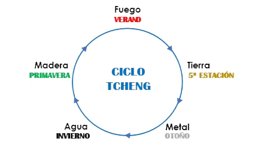
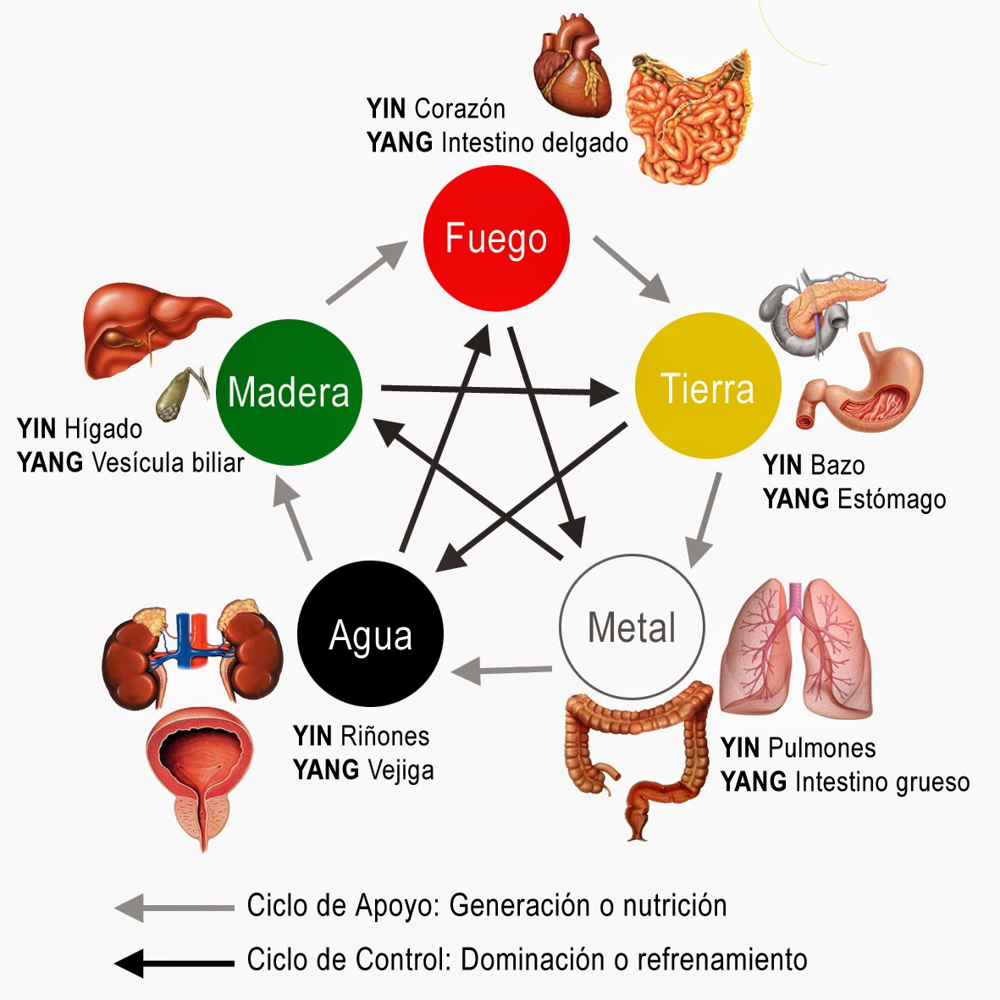

ELEMENTO - ESTACIÓN
Los cinco movimientos
La teoría de los cinco movimientos es para clasificar fenómenos en términos de cinco procesos, representado por los elementos Madera, Fuego, Tierra, Metal y Agua. Es un sistema de correspondencias y patrones que subyace acontecimientos y cosas, en particular en relación a su dinámica. Estos elementos no deben interpretarse solo como las materias básicas en la constitución de la Naturaleza, sino mas bien como cinco fases de comportamiento energético como expresión de la interacción Yin-Yang.
MADERA - PRIMAVERA
Yin: Hígado
Yang: Vesícula biliar
La fase denominada Madera se asocia con funciones activas que están en un período de crecimiento.
FUEGO - VERANO
Yin: Corazón
Yang: Intestino delgado
El Fuego designa funciones que han alcanzado un estado de actividad máxima y están a punto de empezar un declive o período de reposo.
TIERRA - VERANO TARDÍO (CANÍCULA)
Yin: Bazo
Yang: Estómago
La Tierra denota equilibrio o neutralidad, en cierto sentido, la Tierra es un amortiguador entre las otras fases, en el sentido de que las fases relacionan fenómenos observables de la vida humana en imágenes derivadas del macrocosmos.
METAL - OTOÑO
Yin: Pulmones
Yang: Intestino grueso
El Metal representa funciones en un estado de declive.
AGUA - INVIERNO
Yin: Riñones
Yang: Vejiga
El Agua representa funciones que han alcanzado un estado máximo de reposo y están a punto de cambiar la dirección de su actividad.
Ciclo anual de crecimiento y desarrollo biológico
Las cinco fases pueden utilizarse para describir el ciclo anual de crecimiento y desarrollo biológico. El Metal corresponde al otoño, el Agua al Invierno, la Madera a la primavera y el Fuego al verano. La Tierra puede tomarse como parte de la transición de cambio entre cada estación; a la vez, se la utiliza para representar al “verano tardío” (fines del verano y principios del otoño)
Dichas correlaciones se conocen como el Orden de Generación de los cinco movimientos. Representan el modo en que interactúan las cinco fases y surgen la una de la otra.
Quien genera se denomina la Madre y lo generado, el Hijo. Algunos patrones de desarmonía pueden explicarse en referencia al Orden de Generación. El Hijo de una Madre insuficiente, se torna insuficiente por falta de nutrición adecuada. Cuando el Hijo es insuficiente puede “robar Qi” de la Madre convirtiéndola también en insuficiente. SI un órgano esta en deficiencia, se puede mejorar reforzando el órgano Madre. Cuando existe exceso en un órgano puede vaciarse el Hijo
Otra secuencia se conoce como el Orden de Control. Cada fase controla o examina la fase siguiente.

El Orden de Control describe fenómenos que se producen de un modo natural y su función es asegurar que el Orden de Generación no se exceda y produzca desequilibrios. Una desarmonía en el seno del Orden de Control puede significar que un órgano esté ejerciendo un exceso de control sobre el órgano que regula, lo que puede conducir a una insuficiencia en el órgano regulado. O el órgano que debe ser regulado puede convertirse en regulador.
De acuerdo con esta teoría, la energía qi circula en nuestro cuerpo por diferentes canales, o meridianos, que no tienen ubicación anatómica visible, los cuales se corresponden a diferentes órganos y se asocian a la energía de la estación (ver cuadro) Son 12 meridianos principales (6 organos yin/ 6 viceras yang) y otros meridianos que se definen como maravillosos y accesorios.
